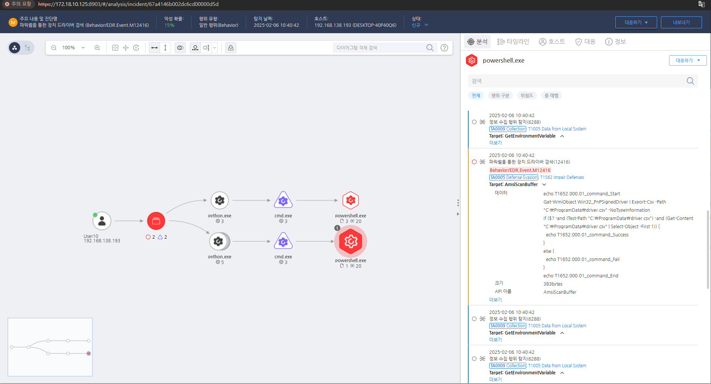

MITRE ATT&CK 액션을 기준으로 대응 방안을 작성
탐지 방법 작성, EFR과 무관하게 해당 Action에 대한 탐지 방법 명시

공격자에 의해 PC가 제어되었을 가능성이 있으므로 호스트 네트워크를 격리합니다.
정기적인 데이터 백업 및 복구 전략 수립
최소 권한 원칙 적용 및 네트워크 격리
파일 무결성 모니터링 및 이상 탐지
랜섬웨어 방어 기능 적용
사용자 교육 및 피싱 방어
네트워크 및 프로세스 감시
Action 실행시 함께 영향을 받는 다른 Techniqes
| ATT&CK |
|---|
| T1078.001 |
|D3FEND| |:-----------:|